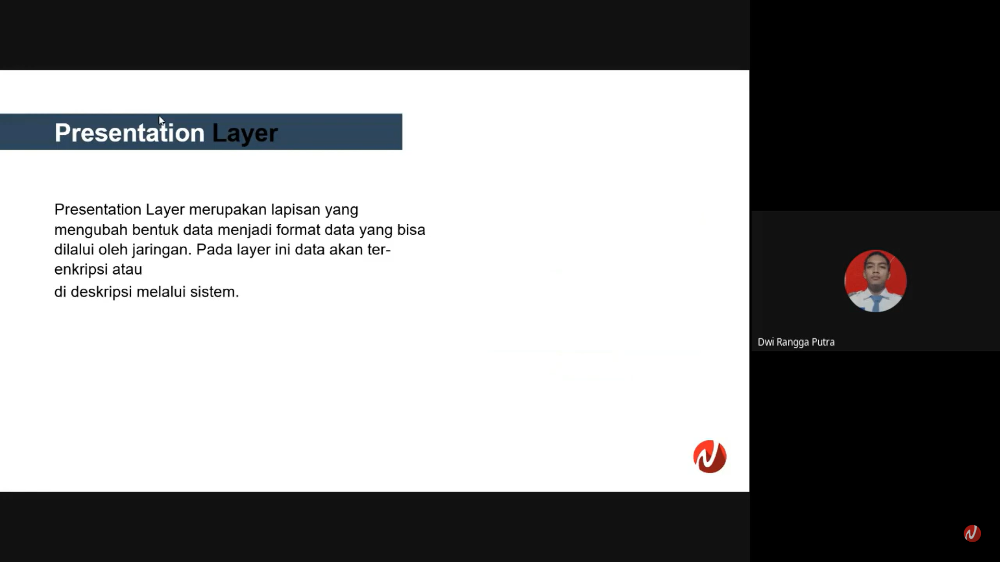
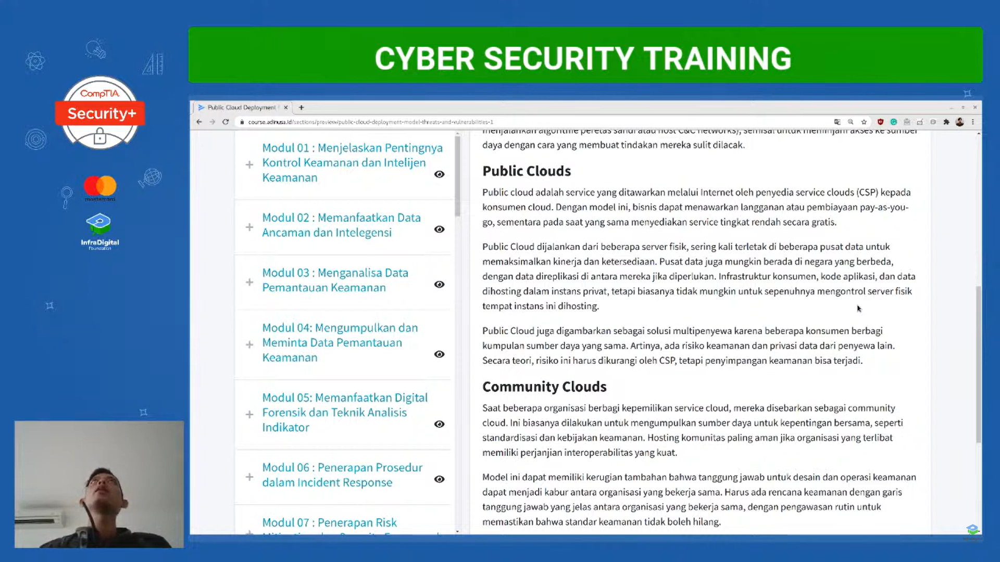
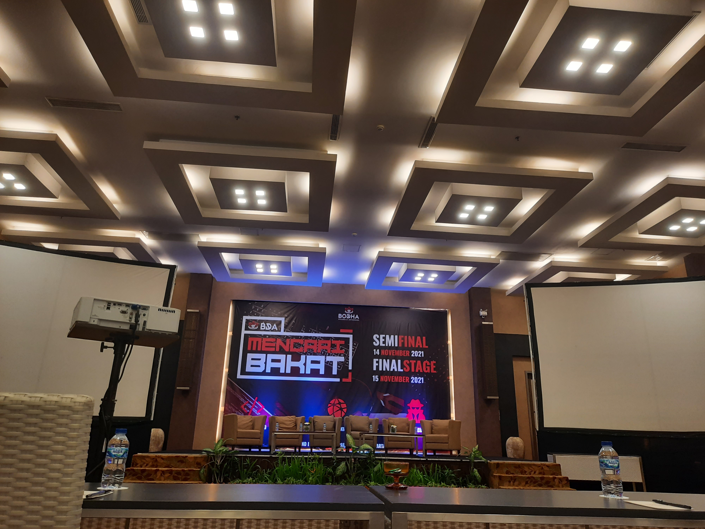
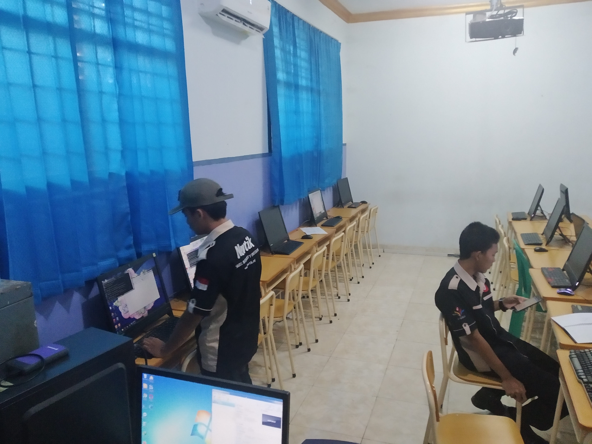

Pengalaman
Mengajar Adik Kelas

Saya mengajari adik kelas saya mengenai OSI Layer dalam materi IT dan Network fundamental
Mengikuti Sertifikasi Internasional Cyber Security (Cysa+)

Saya mengikuti pelatiahan cyber security yang diadakan selama hampir 4 bulan dan alhamdulillah mendapatkan sertifikasi internasional yaitu Cysa+,
di pelatihan ini terbagi menjadi 2 tahap, tahap pertama adalah mempelajari tentang modul security+ lalu jika lulus akan melanjutkan ke modul cysa+ jika lulus
maka akan dapat kesempatan mendapatkan sertifikat cysa+
Mengikuti Lomba Cyber Security

Saya mengikuti lomba cybersecurity bersama teman teman saya di yogyakarta dan sayangnya saya tidak berhasil mendapatkan peringkat 3 besar
tetapi saya dapat pengalaman yang berharga salah satunya banyaknya pesaing di bidang cyber security karna pada dasarnya saya ingin bekerja di cyber security
Kemampuan
Networking

saya mempunyai skill untuk menginstalasi jaringan, troubleshooting jaringan menggunakan perangkat mikrotik, cisco ataupun linux
Hobi
Olahraga Lari
Olahraga lari ialah salah satu hobi saya karena bisa meningkatkan kesehatan, biasanya saya melakukan olahraga 2x dalam seminggu dan paling minimum 1x dalam seminggu dan itu membuat saya segar kembali
jika pusing dalam belajar saya.
Bermain Game
Bermain game memang menyenangkan sehingga membuatnya menjadi salah satu hobi saya jika saya dalam keadaan tertekan dalam belajar atau pusing, tetapi
saya harus membagi waktu antara game dan belajar kalau tidak saya bakal keterusan sebagai contoh saya terlalu serius bermain game selama +- 7 jam nonstop
Sejak dibukanya Jalan Tol Cipularang, kota Bandung telah menjadi tujuan utama dalam menikmati liburan akhir pekan terutama dari masyarakat yang berasal dari Jakarta sekitarnya. Selain menjadi kota wisata belanja,
kota Bandung juga dikenal dengan sejumlah besar bangunan lama berarsitektur peninggalan Belanda.